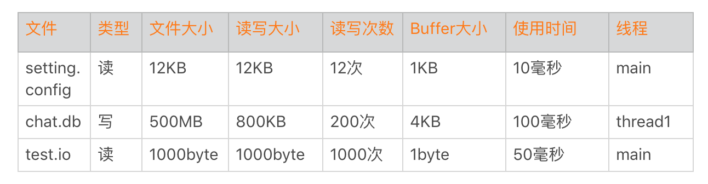
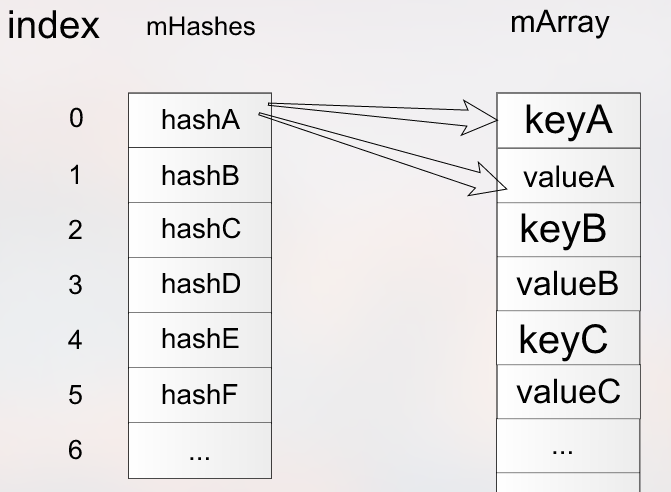
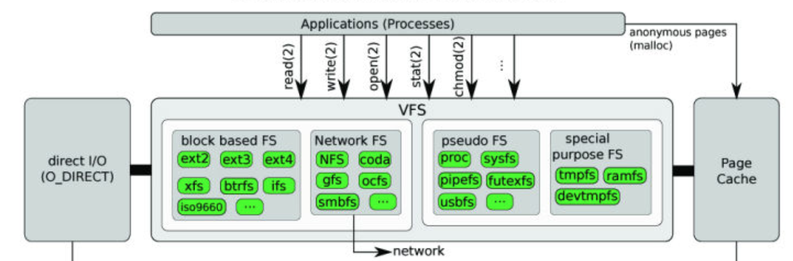
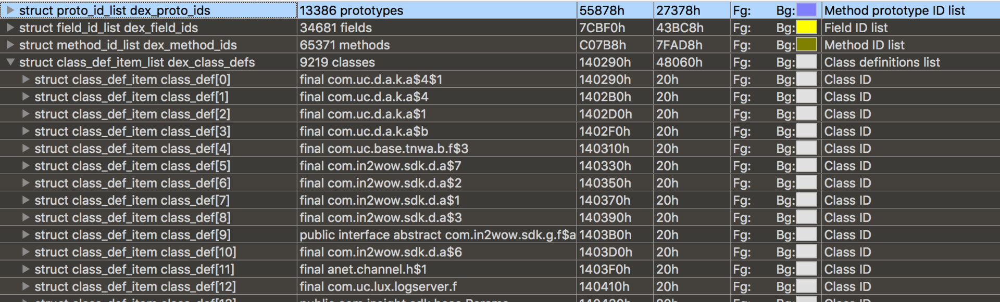
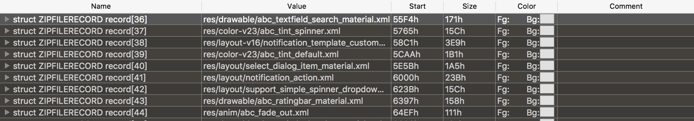
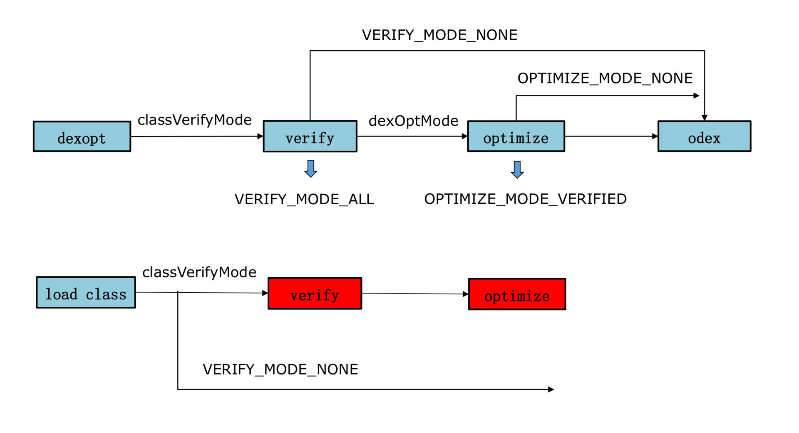
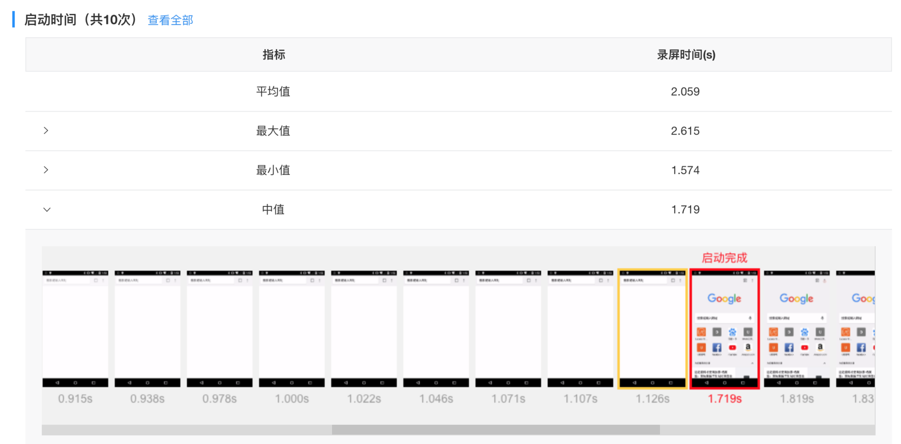
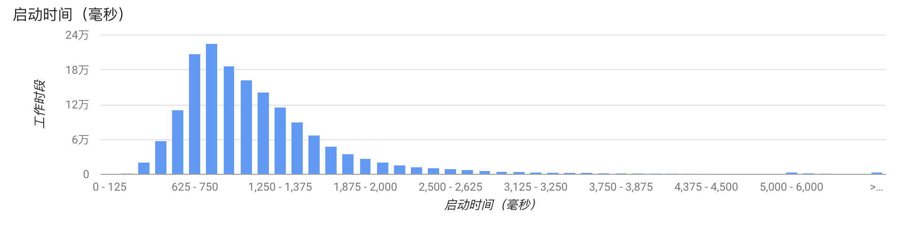

专栏上一期，我们一起梳理了应用启动的整个过程和问题，也讲了一些启动优化方法，可以说是完成了启动优化工作最难的一部分。还可以通过删掉或延后一些不必要的业务，来实现相关具体业务的优化。你学会了这些工具和方法，是不是觉得效果非常不错，然后美滋滋地向老大汇报工作成果：“启动速度提升 30%，秒杀所有竞品好几条街”。
“还有什么方法可以做进一步优化吗？怎么证明你秒杀所有的竞品？如何在线上衡量启动优化的效果？怎么保障和监控启动速度是否变慢？”，老大一口气问了四个问题。
面对这四个问题，你可不能一脸懵。我们的应用启动是不是真的已经做到了极致？如何保证启动优化成果是长期有效的？让我们通过今天的学习，一起来回答老大这些问题吧。
启动进阶方法
除了上期讲的常规的优化方法，我还有一些与业务无关的“压箱底”方法可以帮助加快应用的启动速度。当然有些方法会用到一些黑科技，它就像一把双刃剑，需要你做深入的评估和测试。
1. I/O 优化
在负载过高的时候，I/O 性能下降得会比较快。特别是对于低端机，同样的 I/O 操作耗时可能是高端机器的几十倍。启动过程不建议出现网络 I/O，相比之下，磁盘 I/O 是启动优化一定要抠的点。首先我们要清楚启动过程读了什么文件、多少个字节、Buffer 是多大、使用了多长时间、在什么线程等一系列信息。

那么如何实现 I/O 的监控呢？我今天先卖个关子，下一期我会详细和你聊聊 I/O 方面的知识。
通过上面的数据，我们发现 chat.db 的大小竟然达到 500MB。我们经常发现本地启动明明非常快，为什么线上有些用户就那么慢？这可能是一些用户本地积累了非常多的数据，我们也发现有些微信的重度用户，他的 DB 文件竟然会超过 1GB。所以，重度用户是启动优化一定要覆盖的群体，我们要做一些特殊的优化策略。
还有一个是数据结构的选择问题，我们在启动过程只需要读取 Setting.sp 的几项数据，不过 SharedPreference 在初始化的时候还是要全部数据一起解析。如果它的数据量超过 1000 条，启动过程解析时间可能就超过 100 毫秒。如果只解析启动过程用到的数据项则会很大程度减少解析时间，启动过程适合使用随机读写的数据结构。

可以将 ArrayMap 改造成支持随机读写、延时解析的数据存储方式。同样我们今天也不再展开这部分内容，这些知识会在存储优化的相关章节进一步展开。
2. 数据重排
在上面的表格里面，我们读取 test.io 文件中 1KB 数据，因为 Buffer 不小心写成了 1 byte，总共要读取 1000 次。那系统是不是真的会读 1000 次磁盘呢？
事实上 1000 次读操作只是我们发起的次数，并不是真正的磁盘 I/O 次数。你可以参考下面 Linux 文件 I/O 流程。

Linux 文件系统从磁盘读文件的时候，会以 block 为单位去磁盘读取，一般 block 大小是 4KB。也就是说一次磁盘读写大小至少是 4KB，然后会把 4KB 数据放到页缓存 Page Cache 中。如果下次读取文件数据已经在页缓存中，那就不会发生真实的磁盘 I/O，而是直接从页缓存中读取，大大提升了读的速度。所以上面的例子，我们虽然读了 1000 次，但事实上只会发生一次磁盘 I/O，其他的数据都会在页缓存中得到。
Dex 文件用的到的类和安装包 APK 里面各种资源文件一般都比较小，但是读取非常频繁。我们可以利用系统这个机制将它们按照读取顺序重新排列，减少真实的磁盘 I/O 次数。
类重排
启动过程类加载顺序可以通过复写 ClassLoader 得到。
class GetClassLoader extends PathClassLoader { public Class<?> findClass(String name) { // 将 name 记录到文件 writeToFile(name，"coldstart_classes.txt"); return super.findClass(name); }}然后通过 ReDex 的Interdex调整类在 Dex 中的排列顺序，最后可以利用 010 Editor 查看修改后的效果。

我多次提到的ReDex，是 Facebook 开源的 Dex 优化工具，它里面有非常多好用的东西，后续我们会有更详细的介绍。
资源文件重排
Facebook 在比较早的时候就使用“资源热图”来实现资源文件的重排，最近支付宝在《通过安装包重排布优化 Android 端启动性能》中也详细讲述了资源重排的原理和落地方法。
在实现上，它们都是通过修改 Kernel 源码，单独编译了一个特殊的 ROM。这样做的目的有三个：
-
统计。统计应用启动过程加载了安装包中哪些资源文件，比如 assets、drawable、layout 等。跟类重排一样，我们可以得到一个资源加载的顺序列表。
-
度量。在完成资源顺序重排后，我们需要确定是否真正生效。比如有哪些资源文件加载了，它是发生真实的磁盘 I/O，还是命中了 Page Cache。
-
自动化。任何代码提交都有可能改变启动过程中类和资源的加载顺序，如果完全依靠人工手动处理，这个事情很难持续下去。通过定制 ROM 的一些埋点和配合的工具，我们可以将它们放到自动化流程当中。
跟前面提到的 Nanoscope 耗时分析工具一样，当系统无法满足我们的优化需求时，就需要直接修改 ROM 的实现。Facebook“资源热图”相对比较完善，也建设了一些配套的 Dashboard 工具，希望后续可以开源出来。
事实上如果仅仅为了统计，我们也可以使用 Hook 的方式。下面是利用 Frida 实现获得 Android 资源加载顺序的方法，不过 Frida 还是相对小众，后面会替换其他更加成熟的 Hook 框架。
resourceImpl.loadXmlResourceParser.implementation=function(a,b,c,d){ send('file:'+a) return this.loadXmlResourceParser(a,b,c,d)} resourceImpl.loadDrawableForCookie.implementation=function(a,b,c,d,e){ send("file:"+a) return this.loadDrawableForCookie(a,b,c,d,e)}调整安装包文件排列需要修改 7zip 源码实现支持传入文件列表顺序，同样最后可以利用 010 Editor 查看修改后的效果。

这两个优化可能会带来 100～200 毫秒的提高，我们还可以大大减少启动过程 I/O 的时间波动。特别是对于中低端机器来说，经常发现启动时间波动非常大，这个波动跟 CPU 调度相关，但更多时候是跟 I/O 相关。
可能有同学会问，这些优化思路究竟是怎么样想出来的呢？其实利用文件系统和磁盘读取机制的优化思路，在服务端和 Windows 上早已经不是什么新鲜事。所谓的创新，不一定是创造前所未有的东西。我们将已有的方案移植到新的平台，并且很好地结合该平台的特性将其落地，就是一个很大的创新。
3. 类的加载
在 WeMobileDev 公众号发布的《微信 Android 热补丁实践演进之路》中，我提过在加载类的过程有一个 verify class 的步骤，它需要校验方法的每一个指令，是一个比较耗时的操作。

我们可以通过 Hook 来去掉 verify 这个步骤，这对启动速度有几十毫秒的优化。不过我想说，其实最大的优化场景在于首次和覆盖安装时。以 Dalvik 平台为例，一个 2MB 的 Dex 正常需要 350 毫秒，将 classVerifyMode 设为 VERIFY_MODE_NONE 后，只需要 150 毫秒，节省超过 50% 的时间。
// Dalvik Globals.hgDvm.classVerifyMode = VERIFY_MODE_NONE;// Art runtime.ccverify_ = verifier::VerifyMode::kNone;但是 ART 平台要复杂很多，Hook 需要兼容几个版本。而且在安装时大部分 Dex 已经优化好了，去掉 ART 平台的 verify 只会对动态加载的 Dex 带来一些好处。Atlas 中的dalvik_hack-3.0.0.5.jar可以通过下面的方法去掉 verify，但是当前没有支持 ART 平台。
AndroidRuntime runtime = AndroidRuntime.getInstance();runtime.init(context);runtime.setVerificationEnabled(false);这个黑科技可以大大降低首次启动的速度，代价是对后续运行会产生轻微的影响。同时也要考虑兼容性问题，暂时不建议在 ART 平台使用。
4. 黑科技
第一，保活
讲到黑科技，你可能第一个想到的就是保活。保活可以减少 Application 创建跟初始化的时间，让冷启动变成温启动。不过在 Target 26 之后，保活的确变得越来越难。
对于大厂来说，可能需要寻求厂商合作的机会，例如微信的 Hardcoder 方案和 OPPO 推出的Hyper Boost方案。根据 OPPO 的数据，对于手机 QQ、淘宝、微信启动场景会直接有 20% 以上的优化。
有的时候你问为什么微信可以保活？为什么它可以运行的那么流畅？这里可能不仅仅是技术上的问题，当应用体量足够大，就可以倒逼厂商去专门为它们做优化。
第二，插件化和热修复
从 2012 年开始，淘宝、微信尝试做插件化的探索。到了 2015 年，淘宝的 Dexposed、支付宝的 AndFix 以及微信的 Tinker 等热修复技术开始“百花齐放”。
它们真的那么好吗？事实上大部分的框架在设计上都存在大量的 Hook 和私有 API 调用，带来的缺点主要有两个：
-
稳定性。虽然大家都号称兼容 100% 的机型，由于厂商的兼容性、安装失败、dex2oat 失败等原因，还是会有那么一些代码和资源的异常。Android P 推出的 non-sdk-interface 调用限制，以后适配只会越来越难，成本越来越高。
-
性能。Android Runtime 每个版本都有很多的优化，因为插件化和热修复用到的一些黑科技，导致底层 Runtime 的优化我们是享受不到的。Tinker 框架在加载补丁后，应用启动速度会降低 5%～10%。
应用加固对启动速度来说简直是灾难，有时候我们需要做一些权衡和选择。为了提升启动速度，支付宝也提出一种GC 抑制的方案。不过首先 Android 5.0 以下的系统占比已经不高，其次这也会带来一些兼容性问题。我们还是更希望通过手段可以真正优化整个耗时，而不是一些取巧的方式。
总的来说，对于黑科技我们需要慎重，当你足够了解它们内部的机制以后，可以选择性的使用。
启动监控
终于千辛万苦的优化好了，我们还要找一套合理、准确的方法来度量优化的成果。同时还要对它做全方位的监控，以免被人破坏劳动果实。
1. 实验室监控
如果想客观地反映启动的耗时，视频录制会是一个非常好的选择。特别是我们很难拿到竞品的线上数据，所以实验室监控也非常适合做竞品的对比测试。
它的难点在于如何让实验系统准确地找到启动结束的点，这里可以通过下面两种方式。
-
80% 绘制。当页面绘制超过 80% 的时候认为是启动完成，不过可能会把闪屏当成启动结束的点，不一定是我们所期望的。
-
图像识别。手动输入一张启动结束的图片，当实验系统认为当前截屏页面有 80% 以上相似度时，就认为是启动结束。这种方法更加灵活可控，但是实现难度会稍微高一点。

启动的实验室监控可以定期自动去跑，需要注意的是，我们应该覆盖高、中、低端机不同的场景。但是使用录屏的方式也有一个缺陷，就是出现问题时我们需要人工二次定位具体是什么代码所导致的。
2. 线上监控
实验室覆盖的场景和机型还是有限的，是驴是马我们还是要发布到线上进行验证。针对线上，启动监控会更加复杂一些。Android Vitals可以对应用冷启动、温启动时间做监控。

事实上，每个应用启动的流程都非常复杂，上面的图并不能真实反映每个应用的启动耗时。启动耗时的计算需要考虑非常多的细节，比如：
-
启动结束的统计时机。是否是使用用户真正可以操作的时间作为启动结束的时间。
-
启动时间扣除的逻辑。闪屏、广告和新手引导这些时间都应该从启动时间里扣除。
-
启动排除逻辑。Broadcast、Server 拉起，启动过程进入后台这些都需要排除出统计。
经过精密的扣除和排除逻辑，我们最终可以得到用户的线上启动耗时。正如我在上一期所说的，准确的启动耗时统计是非常重要的。有很多优化在实验室完成之后，还需要在线上灰度验证效果。这个前提是启动统计是准确的，整个效果评估是真实的。
那我们一般使用什么指标来衡量启动速度的快慢呢？
很多应用采用平均启动时间，不过这个指标其实并不太好，一些体验很差的用户很有可能是被平均了。我更建议使用类似下面的指标：
-
快开慢开比。例如 2 秒快开比、5 秒慢开比，我们可以看到有多少比例的用户体验非常好，多少比例的用户比较槽糕。
-
90% 用户的启动时间。如果 90% 的用户启动时间都小于 5 秒，那么我们 90% 区间启动耗时就是 5 秒。
此外我们还要区分启动的类型。这里要统计首次安装启动、覆盖安装启动、冷启动和温启动这些类型，一般我们都使用普通的冷启动时间作为指标。另一方面热启动的占比也可以反映出我们程序的活跃或保活能力。
除了指标的监控，启动的线上堆栈监控更加困难。Facebook 会利用 Profilo 工具对启动的整个流程耗时做监控，并且在后台直接对不同的版本做自动化对比，监控新版本是否有新增耗时的函数。
总结
今天我们学习了一些与业务无关的启动优化方法，可以进一步减少启动耗时，特别是减少磁盘 I/O 可能带来的波动。然后我们探讨了一些黑科技对启动的影响，对于黑科技我们需要两面看，在选择时也要慎重。最后我们探讨了如何在实验室和线上更好地测量和监控启动速度。
启动优化需要耐得住寂寞，把整个流程摸清摸透，一点点把时间抠出来，特别是对于低端机和系统繁忙的场景。而数据重排的优化，对我有非常大的启发，帮助我开发了一个新的方向。也让我明白了，当我们足够熟悉底层的知识时，可以利用系统的特性去做更加深层次的优化。
不管怎么说，你都需要谨记一点：对于启动优化要警惕 KPI 化，我们要解决的不是一个数字，而是用户真正的体验问题。
看完我分享的启动优化的方法后，相信你肯定也还有很多好的思路和方法。今天的课后作业是分享一下你“压箱底”的启动优化“秘籍”，在留言区分享一下今天学习、练习的收获与心得。
课后练习
今天我们的Sample是如何在 Dalvik 去掉 verify，你可以顺着这个思路尝试去分析 Dalvik 虚拟机加载 Dex 和类的流程。
COMMUNITY NOTES
读者评论
今天介绍的 “数据重排”相关的优化压榨了系统和硬件的时间，令我想起以前做存储驱动的相关工作。手机存储的Nand Flash,emmc 等flash存储硬件有其读写的特点或者限制* 最小读取单位sector ，512byte或其他* 最小擦出单位为block(如128个sector64k)或其他* 一个存储单元寿命因芯片质量不同，大概2-3k次通常做法是增大缓存，做一层逻辑的映射，减少实际读写外部Flash的时间，因为每一次硬件操作成本较大，除了实际的数据传输还有开始握手和结束等待的时间。另外会结合磨损均衡和坏块管理算法，提升读写性能和延长存储的使用寿命。调整Apk的文件顺序，使其更加紧凑，那内核I/O读取从flash读取回内存的数据在后续读取中更容易命中，减少了I/O时间。最怕的是随机小文件的读写，因为这样破坏了存储驱动和内核的缓存，要增加很多实际I/O操作,性能很低。在对比I/O性能时候设备也有差异:* 新设备比旧设备性能好* 存储剩余大的设备比存储几乎满的设备性能要好因为旧设备坏块多，存储将满的设备剩余完整好块少，在I/O时候驱动需要调整腾挪数据，找到好的块去写，读时候没有连续读回更多块，降低了缓存的命中，增加了时间。
您上面说，Buffer不小心写成了 1 byte，总共要读取 1000次，这样会命中Page Cache中不会导致真正的IO。可是实际测试的时候，read同一个文件，buffer大小1byte和1k的read速度还有有差异的，这个是为什么呢？
感谢分享，启动这块的线上监控似乎没有崩溃卡顿内存这几个完整，实验室环境居多。我们最近也在尝试做一些线上启动完整过程的函数级微损监控，另外还有启动这块的代码框架似乎也可以写一些。
给了大厂优化的思路，继续理论高大
感谢精彩分享，请问app在android5.0以下由于multidex导致启动速度慢如何破，谢谢！
感觉又迂回到文件系统了。。。基础不好，心塞
优化Dex上文件的重排，是只会在首次安装或者覆盖安装上涉及到吗，其他情况呢?
对于dex中的class按文件大小重排没有明白为什么为优化i/o速度，class的加载和在dex的位置有什么关系？
你好，请问数据重排指的是根据代码中读取各种资源文件的顺序来调整这些文件在目录中的顺序吗？邻近读取的文件存放的位置也要邻近是吗？